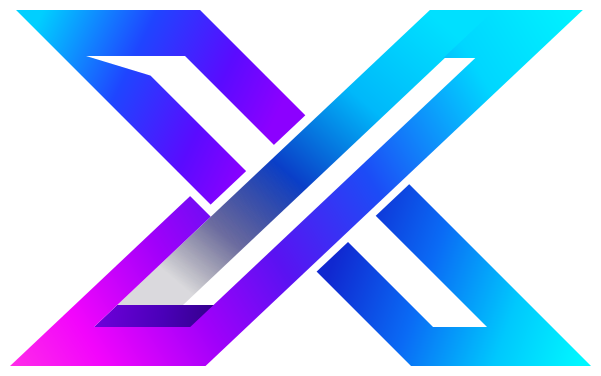

Tu IA local: tus modelos en tu equipo y las respuestas en un panel flotante.
Así funciona (por defecto, todo queda en tu equipo):
Este asistente conecta la extensión con la aplicación de escritorio y comprueba que todo funciona. Solo necesita hacerse una vez.
Si UNnexor (el panel flotante) está abierto, en su menú ⚙ elige «Emparejar extensión…» y copia el código de 6 dígitos que aparece.
Comprobaremos que la aplicación de escritorio está activa, que la vinculación funciona y que el envío llega de punta a punta.
Opciones de la extensión. La configuración del modelo, la temperatura y todo lo demás se hace en la aplicación de escritorio (menú ⚙), que es la fuente única de configuración.